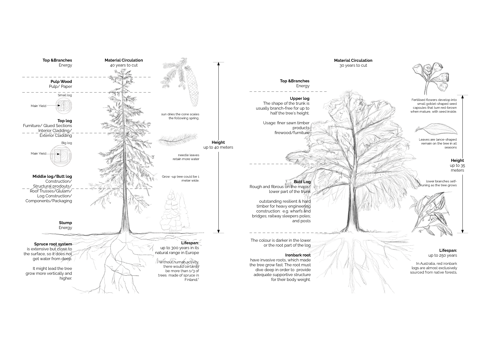

Wood Study in Aalto University
Wood Study in Finland has a well-known reputation internationally. When I started my first year at Aalto University, I chose all the wood-related lecture series. I was amazed by how deeply study Finnish knew about wood and its nature which is incomparable to any other country I have ever studied. From 'How the trees grow' to 'How to assemble the timber', this is a process of learning the materials. Finlands with its advantage in the forest, it was such a journey to learn the wood surround by myself.
The case study on 'Community centre St. Gerold, AT 2009' helped to understand more on how wood performed in the building construction. You could click each topic for further information
How it grows
The comparison between Norway Spruce in Finland and Ironbark in Australia
Building Structrure
The project is located on a steep southern slope above the church of Sankt Gerold in the Great Walser Valley. The project take the advantage of the site to have two entrance on both sides.Apart from the foundation slab and supporting wall, the four-storey building is made entirely of timbe.
Wood Facade
The project is also a model of environmentally conscious construction in which the materials come from the forests of the Great Walser Valley and was processed by local carpenters. The whole building used solid wood without any glued timber materials. The exterior wall was a double layer of insulation one parallel to structural parts and the outer layer covers the ceiling edges.
Material Usage
Except for the lift shaft, solid wood was the only building material used. In order to achieve sustainability, the support structure, outer cladding, fi ttings and furnishings made of fi r form a homogeneous unit. These all contributed to the energy saving on both material transportation and renewable materials
 Yaqi Liao
Yaqi Liao